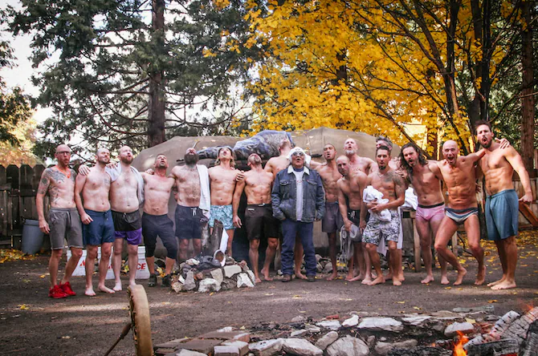

B901 · Your Authentic Values (Men)
Hi {first_name},
As men, we're often told to prioritize certain values such as success, self-reliance, and being decisive. However, it's crucial to identify and stand up for our authentic values, the ones that truly define us and give us purpose. By doing so, we can lead a fulfilling life.
To help you discover your authentic values, I wanted to share a condensed version of an exercise I take clients through:
PART I List out your top 5 core values as you know them.
If you've never explored your values, I HIGHLY recommend it. Many times in life when we experience stress, frustration, and pain, it's often because we are living in a way that is not in alignment with our values (or maybe we've never taken the time to get clear on them in the first place).
If you'd like to be guided to uncover your values as a starting place, here is a great place to start exploring your Hierarchy of Values by Dr. Dimartini (takes between 15-60 minutes) at no cost.
PART II: Take your time with this and really sit down with the questions
If you take the time to sit with these three questions, I guarantee you will uncover some interesting insights about yourself.
PART III
An exercise like the above, if taken to heart, can change your life.
If you're a man who finds value in exploring yourself, your motivations, and what may be holding you back, then I would like to invite you to two upcoming events happening in Northern California.
Upcoming Live Events
These events are designed to help you connect with your deeper sense of self and confidently navigate life, even when faced with uncomfortable or challenging situations.
You'll learn the importance of trusting yourself and standing up for what you believe in, regardless of pressure. You'll connect with a community of like-minded men who are on the same journey.
If you can't wait until our most immersive Men of Movement retreat happening June 8-11th, we have another event on April 29th at Stemple Creek Ranch for one day. Anyone who attends both events will get the April 29th event for free.
So, if you're ready to live your life to the fullest, click below to learn more and secure your spot:
April 29th: From Inner Critic to Inner Coach Event (click here)
June 8-11: Men of Movement Retreat (click here)
 Remember, true power comes from within. Join us at one of these events and tap into your inner strength.
Best regards, Mike |